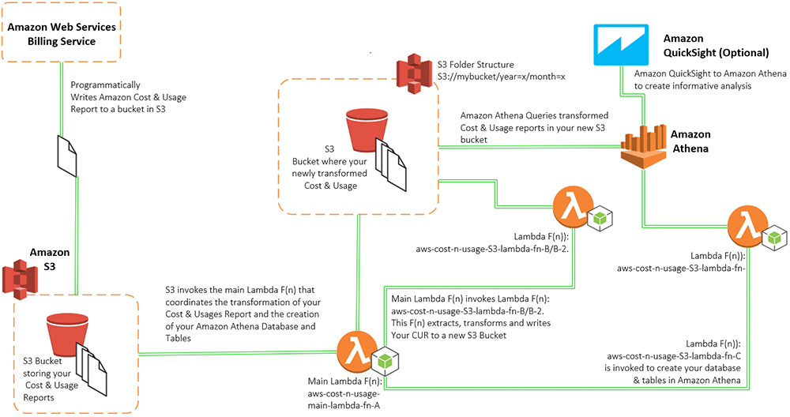
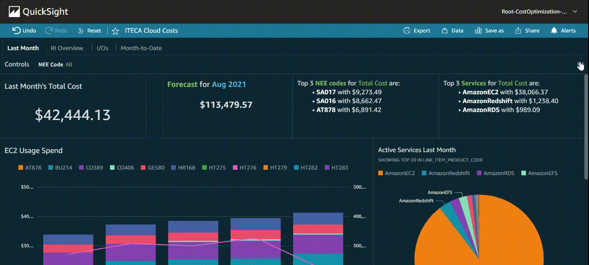

(Last Edited: 28 June 2021)
Hello and welcome to my website! It's a work in progress since I'm continuously learning html, css, backend programming, and so on. (Though it's a big win if you're able to read this!)
For now, this will be a page with a general cover letter and below you'll find my resume.
I'm currently a senior attending the University of Alabama, majoring in computer science with a minor in mathematics. I've been doing a little bit of everything within these last couple years! My first real job at 17 was at a Toyota car dealership as a car saleswoman and that led to an internship following my freshman year of college at Southeast Toyota. While I was there, I worked in data management where I learned how to manipulate data in on-premises servers, this was where I found my strange passion to pursue data and first dabbled in machine-learning projects.
After that I landed an opportunity to work with cloud data at NextEra Energy. I had two titles that I often interchange on my resume: "Cloud Data Engineering Intern" and "Cloud Computing Intern". The latter is less of a mouthful. During my summer, I worked closely with Amazon Web Services (AWS) for the first time and built the backend of my project: a platform to query AWS Cost and Usage reports from the AWS console. You can get a sense of what that looks like below.

In the summer of 2021, I returned to NextEra Energy to develop data tools to track cloud financials. My data dashboards helped lead management make more informed decisions when it comes to using the AWS cloud platform. Below you can see an example of my Amazon QuickSight Dashboards.


Through this summer, I've utilized areas of analytics like SQL querying and data visualization. I also delved deeper into the world of cloud architecture as the department I worked in migrates more of their workload to AWS. This experience has been invaluable to me in both persuading me to learn more about cloud infrastructure and data engineering.
I'm looking forward to further opporunities like these to progress my passions in these fields.